가계부가 달력을
볼 줄 알아야죠
카드 결제일이 주말·공휴일에 걸리면 실제로는 다음 영업일에 빠져나갑니다. 하우투는 그걸 계산해서 미리 알려줍니다. 카드 취소, 카드 혜택, 대출 이자와 원금 — 가계부가 늘 틀리던 것들을 대신 계산합니다.
- 실제 출금일로 계산 — 휴일이면 다음 영업일
- 카드 취소가 어느 청구서에서 빠지는지
- 어느 카드로 냈어야 가장 좋았는지
- 이자와 원금을 갈라서 기록 — 순자산이 정확해집니다
- 점수와 뱃지 — 이번 주엔 지난주보다 얼마 아꼈는지
- 연금·세금을 쉬운 말로 — 눈높이 세 단계
- 가계부
- 대출·할부
- 카드 혜택
- 소비 일기
- 생리 기록
- 계산기
- 자영업 손익
- 투자
- 절세
- 금융 학습
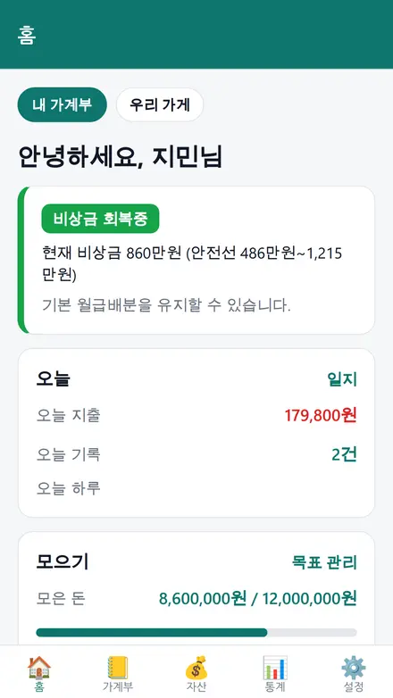
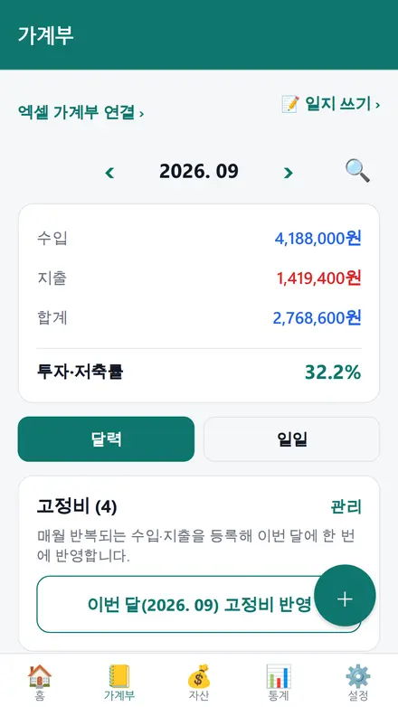
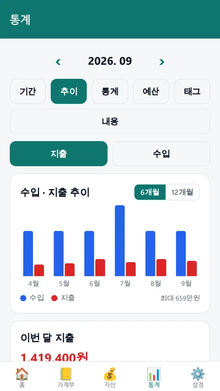
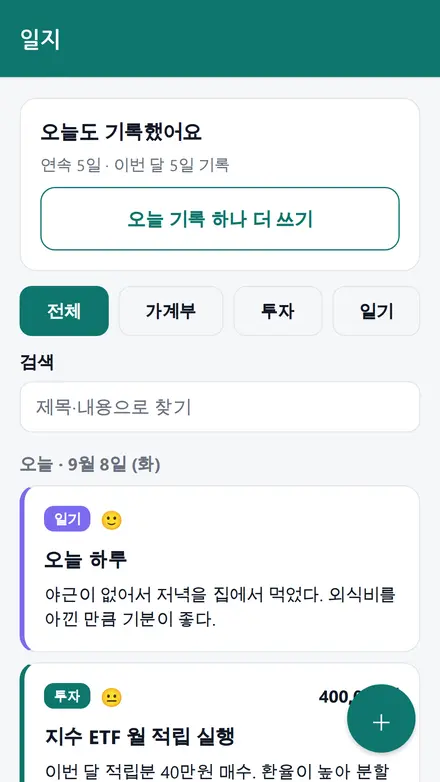
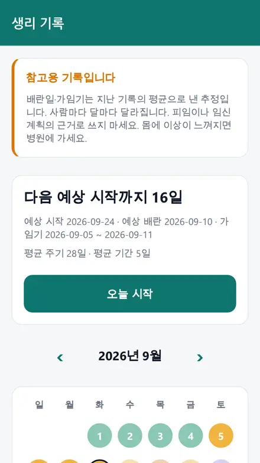
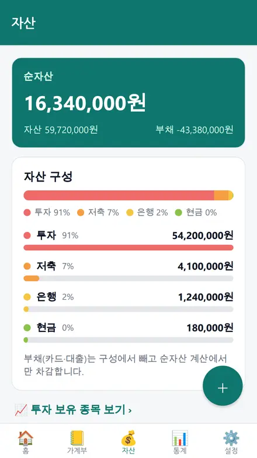
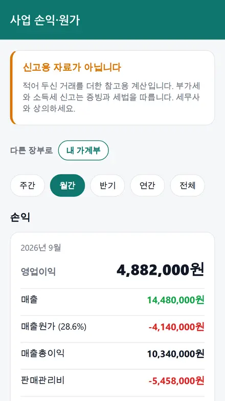
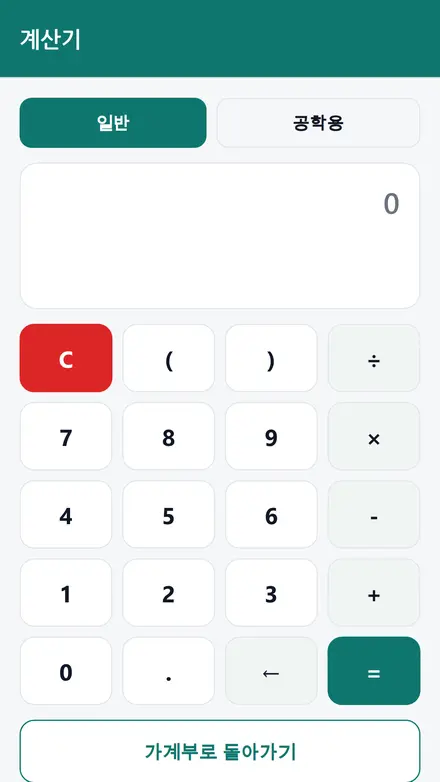
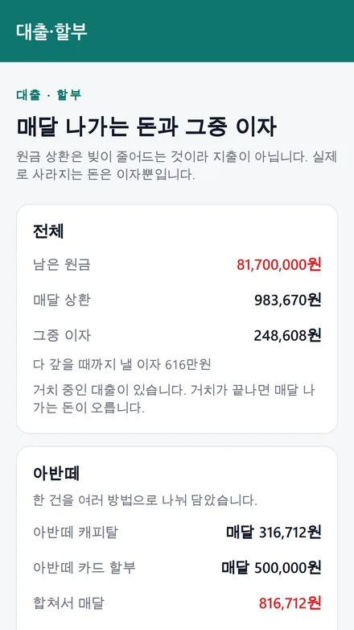
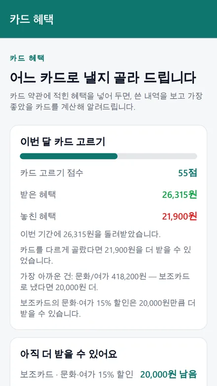
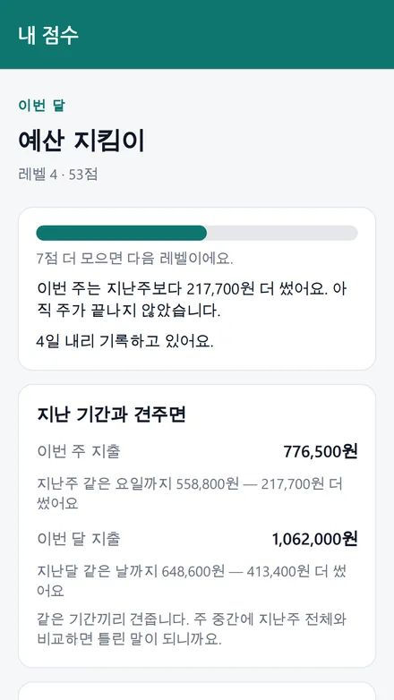
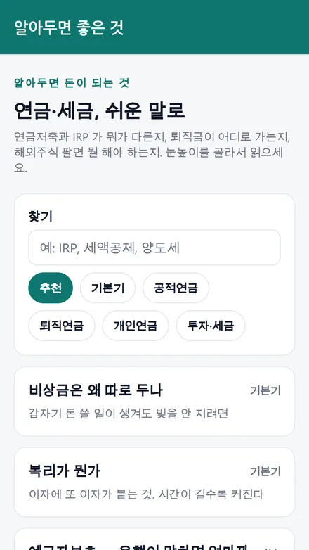
다른 가계부와 무엇이 다른가
기록하는 앱은 많습니다. 하우투는 돈이 실제로 언제 빠져나가는지를 계산하고, 숫자 옆에 그날의 사정을 같이 둡니다.
| 이런 상황 | 보통의 가계부 | 하우투 |
|---|---|---|
| 카드 결제일이 일요일 | 그날로 표시 | 다음 영업일로 계산해서 표시 |
| 보험료 자동이체가 토요일 | 카드와 똑같이 처리 | 그날 그대로 — 항목마다 규칙을 다르게 둡니다 |
| 말일 결제가 다음 달로 밀림 | 이번 달 예산에서 사라짐 | ‘다음 달로 넘어감’이라고 알려줍니다 |
| 결제일에 잔액이 모자랄 것 같음 | 당일에 알게 됨 | 하루 전 아침에 알림 |
| 왜 그렇게 썼는지 기억 안 남 | 숫자만 남음 | 지출 화면에서 바로 소비 일기를 씁니다 |
| 그 시기만 되면 유독 많이 씀 | 알 방법이 없음 | 생리 주기 단계별로 지출·식욕을 견줘 봅니다 |
| 금액을 나눠 넣어야 함 | 계산기 앱을 따로 열기 | 금액 칸에 12000+3500*2 를 그대로 입력 |
| 가게를 하는데 매출만 보임 | 가계와 섞여 순이익을 모름 | 사업 장부를 따로 두고 매출−원가−판관비로 계산합니다 |
| 6월에 쓰고 7월에 결제된 게 8월에 취소됨 | 직접 지우거나 마이너스로 적음 | 취소일이 속한 청구서에서 빼고, 환불이 더 많으면 통장으로 들어온 것으로 처리합니다 |
| 쿠팡에서 여러 건 중 일부만 취소 | 금액을 다시 계산해서 고쳐 적음 | 부분 취소분만 빼고 남은 금액이 자동으로 맞습니다 |
| 취소가 많아 전월 실적이 모자람 | 실적이 그대로 보임 | 취소분을 뺀 순액으로 계산합니다 — 마이너스면 그만큼 더 써야 채워집니다 |
| 어느 카드로 낼지 매번 헷갈림 | 감으로 고름 | 혜택을 등록해 두면 가장 좋았을 카드와 놓친 금액을 알려줍니다 (AI 아님·계산) |
| 통장에서 30만원이 빠짐 | 이체인지 체크카드인지 구별 안 됨 | 체크카드를 통장 하위로 묶어 갈라서 보여줍니다 |
| 대출 상환 120만원을 적어야 함 | 전액 지출 — 지출이 부풀고 순자산이 낮게 보임 | 이자는 지출로, 원금은 이체로 자동 분리합니다 |
| 차를 현금+카드할부+캐피탈로 삼 | 따로따로 적어 총액을 알 수 없음 | 한 건으로 나눠 담고 ‘이자까지 치면 얼마짜리’를 계산합니다 |
| 디딤돌·버팀목·중기청 대출 | 직접 이율·방식을 계산 | 정부지원 상품까지 골라서 넣습니다 (37종) |
| 거치 3년 뒤 상환금이 뛴다 | 닥쳐서야 알게 됨 | 거치가 끝나면 매달 얼마로 오르는지 지금 알려줍니다 |
| 마이너스통장 | 할부처럼 취급되어 계산이 틀림 | 한도와 쓴 만큼의 이자로 따로 계산합니다 |
| 아껴도 티가 안 나 재미가 없다 | 숫자만 쌓임 | 점수·레벨·뱃지로 보여주고 ‘지난주보다 얼마 아꼈는지’를 같은 기간끼리 견줍니다 |
| 연금저축과 IRP가 뭐가 다른지 모름 | 알아서 찾아보라고 함 | 앱 안에서 눈높이 세 단계로 설명합니다 (초등학생도 읽을 수 있게) |
| 부부가 각자 IRP·ISA를 굴림 | 한 장부에 섞거나 포기 | 각자 장부를 그대로 두고 합산해서 전체만 같이 봅니다 |
돈이 언제 움직이는지부터
달력을 읽는 가계부라야 다음 주에 얼마가 남는지 정확해집니다.
결제일이 빨간날이면
신용카드 대금은 다음 영업일로 밀리고, 보험료 같은 자동이체는 그날 그대로 빠집니다. 항목마다 다르게 설정합니다.
이번 달이 아니라 다음 달 지출
말일 결제가 휴일이라 1일로 밀리면 그 달 예산에 안 잡힙니다. 하우투는 이 경우를 짚어 줍니다.
모자랄 것 같으면 하루 전에
결제 계좌 잔액에서 나갈 돈을 날짜순으로 빼 보고, 모자라는 날 하루 전 아침에 알려줍니다.
오늘 쓰면 언제 청구되나
카드사·결제일마다 다른 이용기간을 직접 설정하고, 마감이 다가오면 알려줍니다. 실적 채우기도 같이 봅니다.
통장 잔액 ≠ 쓸 수 있는 돈
남은 고정지출을 빼고 들어올 급여를 더한 실제 여윳돈을 홈에서 바로 봅니다.
같은 건 다시 안 적습니다
매주·몇 주마다·매달·몇 개월마다·매년, 요일까지 골라 반복 등록합니다.
숫자 옆에 그날의 사정
가계부가 오래 못 가는 이유는 숫자만 남기 때문입니다. 왜 그랬는지가 있어야 다음 달이 달라집니다.
지출 화면에서 바로 한 줄
지출을 적다가 ‘이 지출로 한 줄 쓰기’를 누르면 날짜·금액이 채워진 채로 일기가 열립니다. 기분과 사진도 함께 남습니다. 연속 기록 일수도 셉니다.
그 시기에 뭐가 당겼는지까지
주기를 기록하면 단계별로 하루 평균 지출과 당긴 음식을 견줘 줍니다. 의료기기가 아닌 참고용이며, 기록은 기기 밖으로 나가지 않습니다. PIN 잠금도 걸 수 있습니다.
일반 + 공학용, 기록까지
앱 안에 계산기가 따로 있습니다. = 를 누른 계산은 최대 100개까지 남고, 금액 칸에서도 계산식을 그대로 씁니다.
야식·배달에 태그를 달면
줄이고 싶은 지출에 태그를 붙이면 얼마를 아낄 수 있었는지 모아 보여 줍니다. 나무라지 않고 사실만 말합니다.
초등학생부터 은퇴한 분까지
쓰는 사람 유형을 고르면 분류·예산·보이는 화면이 달라집니다. 학생에게 IRP를 보여 주지 않고, 은퇴하신 분께는 의료비를 앞에 둡니다.
밤에는 저절로 어둡게
기기 설정을 따라 밝기가 바뀌고, 강조색은 초록·파랑·자두·모래 중에 고릅니다.
카드와 빚, 계산이 제일 까다로운 것들
가계부가 틀리는 곳은 대체로 여기입니다. 카드 취소, 카드 고르기, 그리고 대출입니다.
6월에 쓰고 8월에 취소돼도
환불은 취소일이 속한 청구 사이클에서 빠집니다. 부분 취소도, 환불이 사용액보다 많아 통장으로 돌려받는 달도 그대로 처리합니다.
어느 카드로 냈어야 했나
카드 약관의 혜택을 넣어 두면 실제로 받은 금액과 가장 좋았을 카드를 견줘 카드 고르기 점수를 냅니다. 이번 달 한도가 남은 혜택도 짚어 줍니다. AI가 아니라 계산입니다 — 돈 계산은 흔들리면 안 되니까요.
이체인지 체크카드인지
체크카드를 통장의 하위로 묶습니다. 통장에서 나간 돈이 이체였는지 카드 사용이었는지 갈라서 보여줍니다.
이자만 진짜 비용입니다
매달 상환액을 이자(지출)와 원금(이체)으로 나눠 적습니다. 원금까지 지출로 세면 그달 지출이 부풀고 순자산이 실제보다 낮게 보이니까요.
현금 + 카드할부 + 캐피탈
차 한 대를 세 가지로 나눠 샀어도 한 건으로 묶어 관리합니다. 이자까지 치면 실제로 얼마짜리인지가 바로 나옵니다. 유예(잔가보장)할부도 그대로 맞습니다.
디딤돌·버팀목·중기청까지
주택담보(원리금·원금균등·거치식)·집단대출(중도금·잔금)·디딤돌·신생아 특례·생애최초·보금자리론·버팀목·청년전용·중소기업취업청년·캐피탈(신차·중고차)·휴대폰 할부·햇살론·사잇돌·마이너스통장까지 37종을 골라서 넣습니다. 거치기간도 그대로 계산합니다.
가계부와 투자를 한곳에
보유 종목과 자산군 비중
평가손익과 비중을 보고, 적립식 자동이체도 휴일을 반영해 실제 출금일로 계산합니다.
연금·IRP 세액공제 한도
얼마를 더 넣을 수 있는지 계산해 보여 줍니다. 연말정산에서 돌려받는 돈입니다.
가게를 한다면
사업 장부를 따로 만들면 매출에서 원가와 판관비를 빼 순이익을 봅니다. 메뉴별 원가와 원가율, 손익분기 매출, 부가세 예상액까지 나옵니다. 신고 자료가 아닌 참고용입니다.
각자 쓰고, 합쳐서 보고
부부·연인이 각자 장부를 그대로 굴리면서 자산과 흐름만 합쳐 봅니다. 연금·IRP·퇴직연금은 지금 못 쓰는 돈이라 따로 셉니다.
계속 하게 만드는 것들
가계부는 석 달을 못 넘기는 게 보통입니다. 그래서 좋아진 것을 먼저 보여줍니다.
이번 주엔 얼마 아꼈나
지난주 같은 요일까지, 지난달 같은 날까지와 견줍니다. 주 중간에 지난주 전체와 비교하면 틀린 말이 되니까요.
돈이 많고 적음으로 매기지 않습니다
기록 습관, 저축률, 예산 지키기, 비상금, 빚 줄이기 — 전부 본인이 바꿀 수 있는 것만 셉니다. 월급 300만원인 사람과 3,000만원인 사람이 같은 점수를 받을 수 있어야 하니까요.
하루 빠져도 끊기지 않아요
완벽하지 않아도 됩니다. 이틀 비어야 처음부터입니다. 못 받은 뱃지도 조건과 진행도를 보여주되 나무라지 않습니다.
연금·세금을 쉬운 말로
연금저축과 IRP가 뭐가 다른지, 퇴직금이 어디로 가는지 모르면 세액공제 900만원을 그냥 흘려보냅니다. 해외주식 팔고 5월에 신고를 안 하면 가산세를 뭅니다.
쉽게 · 보통 · 자세히
같은 내용을 세 가지로 설명합니다. 초등학생이 읽을 말부터, 실제로 신고할 때 필요한 것까지. 전 연령이 쓰는 앱이니까요.
국민·공무원·사학·군인연금
퇴직금 DB와 DC의 차이, 회사에서 받는 IRP와 개인 IRP, 연금저축까지. 2026년 연금개혁으로 바뀐 보험료율과 소득대체율도 반영했습니다.
ISA · 해외주식 양도세
연 250만원 공제 후 22%, 5월에 직접 신고. 손실 상계는 되지만 이월은 안 된다는 것까지. 금융소득종합과세 2,000만원 기준도 함께 봅니다.
내 돈 이야기는 내 폰에
가계부는 통장 사정이 전부 드러나는 기록입니다. 그래서 기본이 기기 저장입니다.
| 데이터 | 어디에 저장되나 |
|---|---|
| 거래 내역 · 계좌 잔액 · 보유 종목 | 기기 안에만 (서버로 보내지 않음) |
| 소비 일기 글 · 사진 | 기기 안에만 |
| 생리 기록 | 기기 안에만 — 드라이브에도, 함께 쓰는 장부에도 올리지 않음 |
| 엑셀 동기화를 켠 경우 | 본인 Google Drive의 엑셀 파일 (운영자 서버를 거치지 않음) |
| AI 리포트를 누른 경우 | 월 합계·비율 같은 요약값만 전송 (개별 거래·상호명 제외) |
요금
무료로 다 쓸 수 있고, 광고를 없애거나 AI를 더 쓰고 싶을 때만 결제합니다.
무료
가계부·자산·투자·절세·일기·생리 기록·계산기·엑셀 동기화·알림까지 전부. 화면 아래 배너 광고가 있고, AI 리포트는 월 5회입니다.
광고 제거 · Plus
배너 광고가 사라지고 AI 리포트 횟수가 늘어납니다.
평생권
한 번 결제로 광고 없이 계속 사용합니다. AI 무제한은 포함되지 않습니다.
자주 묻는 것
계좌를 연결하면 자동으로 입력되나요?
아니요. 은행·카드사 계정을 연결하지 않습니다. 계좌번호·카드번호·증권사 로그인 정보는 저장할 자리 자체가 없습니다. 카드 승인 문자를 붙여넣으면 금액·상호를 알아서 채워 주는 기능은 있습니다.
생리 기록은 정확한가요?
지난 기록의 평균으로 낸 추정입니다. 사람마다 달마다 달라지므로 피임이나 임신 계획의 근거로 쓸 수 없습니다. 이 기록은 기기 안에만 저장되고 서버·구글 드라이브 어디로도 전송하지 않습니다.
기기를 바꾸면 데이터는요?
설정에서 JSON으로 내보내고 새 기기에서 불러오면 됩니다. Google Drive 엑셀 동기화를 켜면 거래 내역과 계좌 이름은 기기 사이에서 자동으로 맞춰집니다.
PC에서도 볼 수 있나요?
Drive 동기화를 켜면 본인 Google Drive에 엑셀 파일이 생깁니다. PC에서 Excel로 열어 편집하고 저장하면 앱에도 반영됩니다. 금액 칸에 수식을 넣어도 앱이 계산해 반영합니다.
투자 종목을 추천해 주나요?
하지 않습니다. 하우투는 투자자문이 아니고, 특정 종목의 매수·매도를 지시하지 않습니다. 입력한 자료로 배분과 한도를 계산해 보여 주는 참고용 도구입니다.
공휴일은 어떻게 아나요?
주말과 양력 공휴일, 대체공휴일은 앱이 규칙으로 계산합니다. 설·추석처럼 해마다 바뀌는 날은 공공데이터를 받아오거나, 설정에서 직접 등록할 수 있습니다.